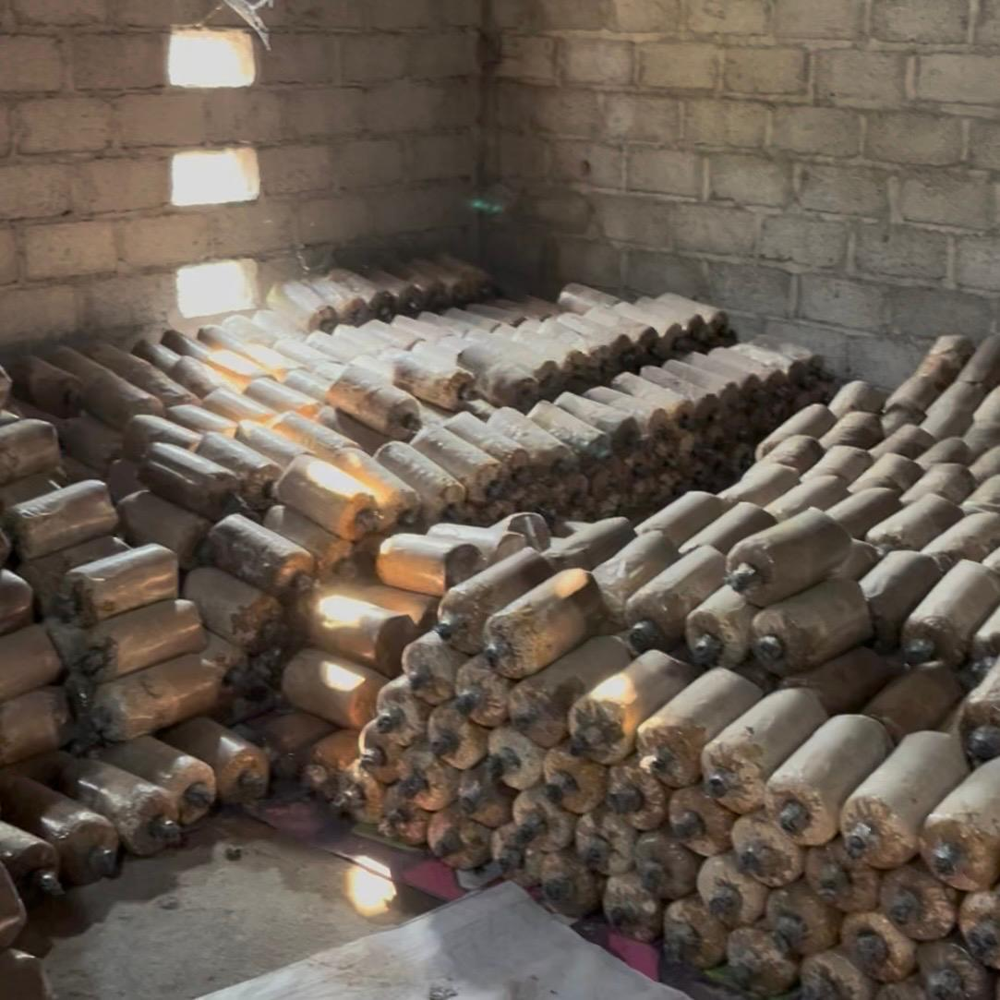
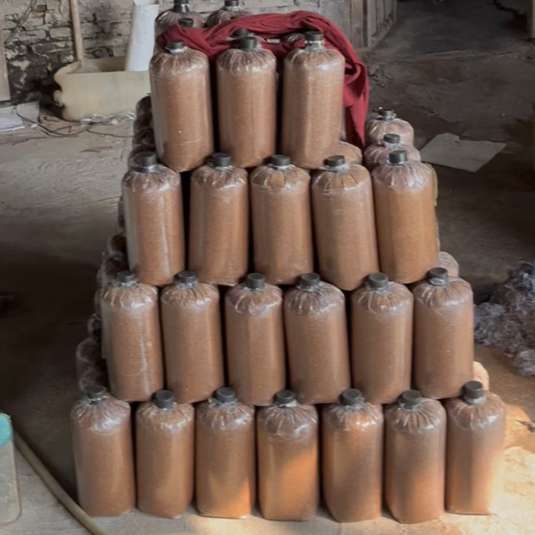
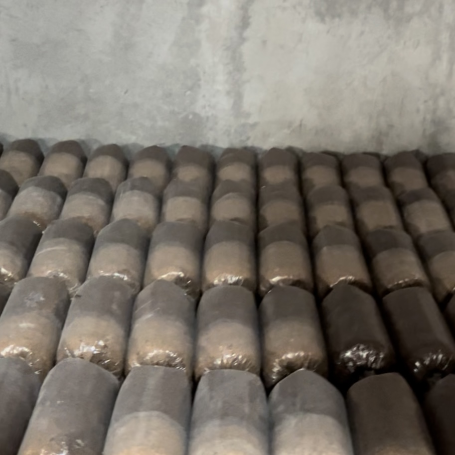
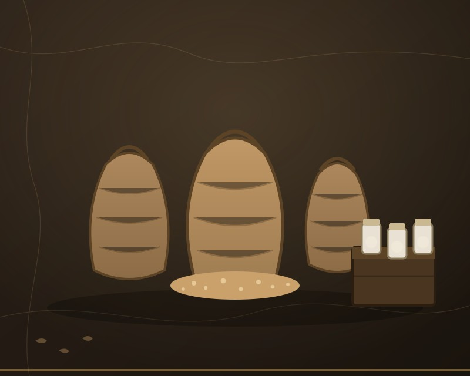
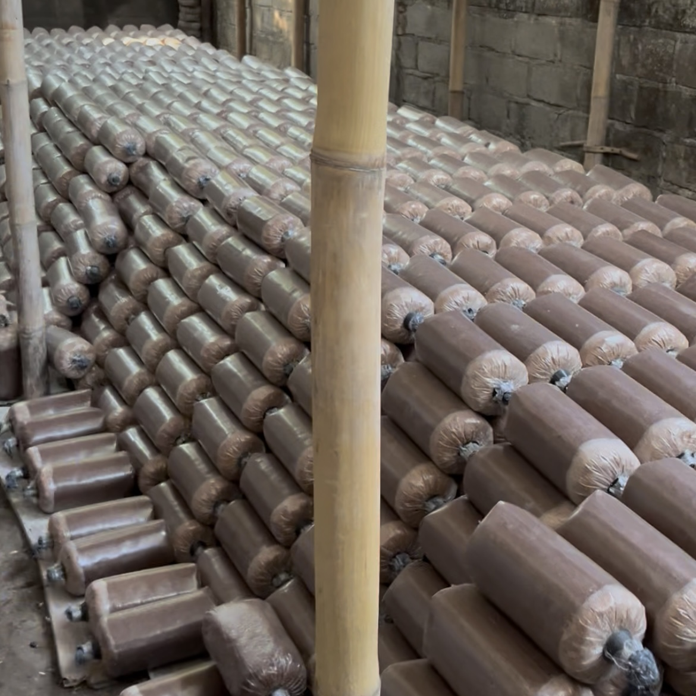
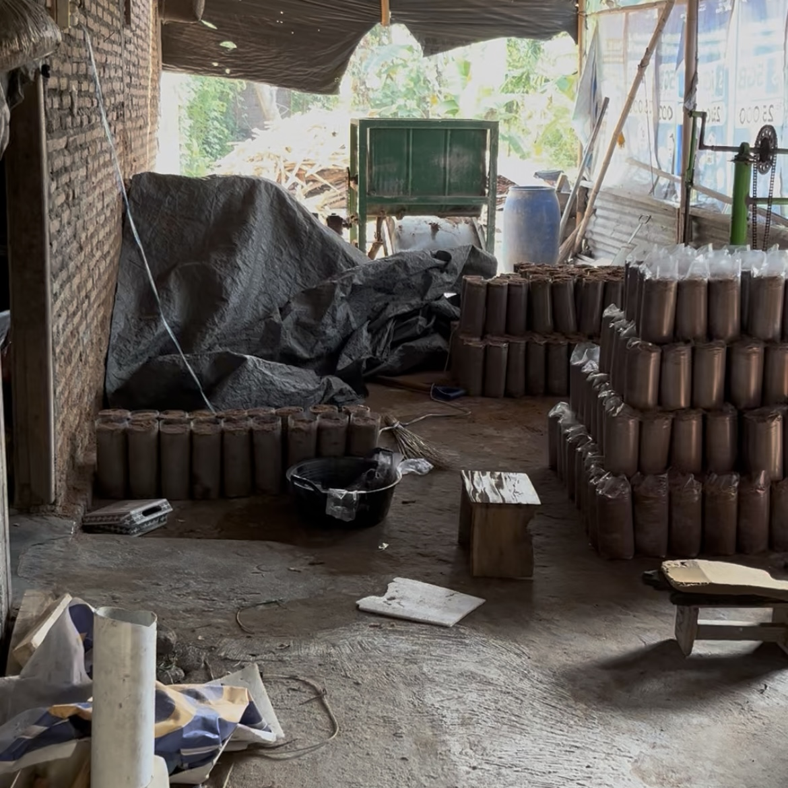
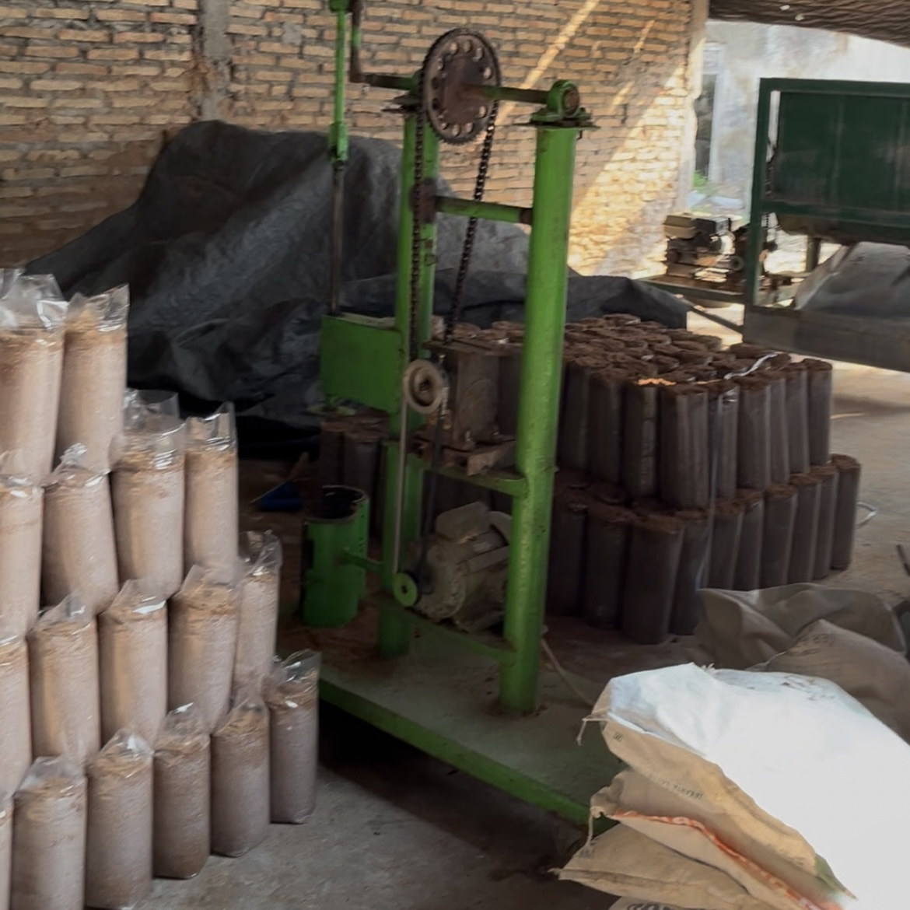
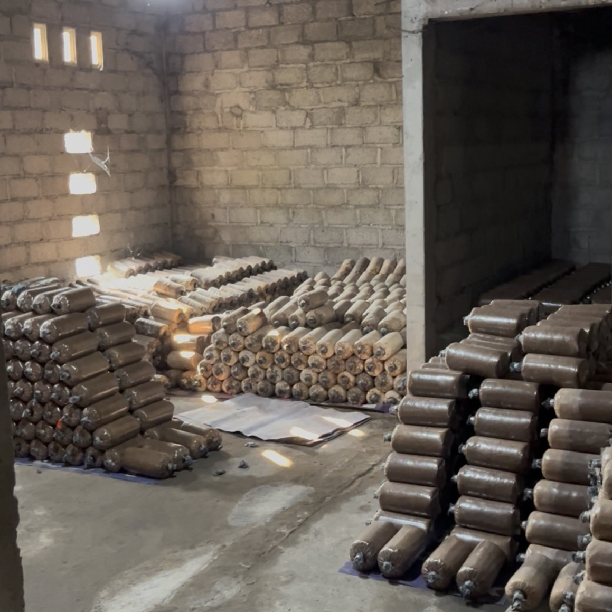

Pembibitan Jamur · Karangan, Pasung, Kec. Wedi, Kab. Klaten, Jawa Tengah
SOMO MUSHROOM membibitkan jamur mulai dari serbuk gergaji hingga siap diinkubasi — Selalu dikerjakan dalam alur yang konsisten agar petani percaya pada setiap baglog yang datang.
Profil Singkat
SOMO MUSHROOM adalah usaha mikro yang bergerak di bidang pembibitan jamur, berlokasi di Desa Pasung, Kecamatan wedi, Dusun Karangan. Berdiri sejak 2017, dan kini menjadi salah satu pemasok bibit jamur yang diandalkan oleh petani di sekitar wilayahnya.
Berbeda dari kebanyakan usaha jamur yang mengurus budidaya sampai panen, SOMO MUSHROOM hanya fokus pada satu tahap yaitu pembibitan. Mayoritas pesanan yang masuk adalah bibit jamur kuping, meski jenis lain juga dilayani sesuai permintaan petani.
Produksi berjalan secara fleksibel mengikuti pesanan yang masuk agar bibit yang dikirim selalu dalam kondisi segar.

Layanan

Produk utama — dibibitkan lewat alur yang sama setiap siklus, siap dikirim begitu miselium merambat merata.

Di luar jamur kuping, kami juga menerima pesanan bibit jenis jamur lain sesuai kebutuhan petani.

Terbuka untuk kerja sama jangka panjang dengan pemasok serbuk gergaji dan bahan pendukung lainnya.
Somo Mushroom bersiap memperluas kapasitas untuk menjangkau sentra-sentra jamur yang lebih besar pada daerah Jawa Tengah. Bagi mitra atau pemasok yang ingin membantu proses ini, silakan hubungi kami.
Alur Produksi
Sama seperti miselium yang menjalar mengikuti jalur substratnya, setiap baglog melewati jalur produksi yang sama — setiap langkah tidak dilewati.
Bahan baku utama, dipasok dari sentra yang berkualitas
Serbuk dicampur bahan pendukung hingga komposisinya merata.
Campuran diistirahatkan supaya media tanam matang sempurna.
Baglog disterilkan untuk mematikan kontaminan yang tak diinginkan.
Bibit induk ditanamkan setelah baglog benar-benar dingin.
Miselium dibiarkan menjalar hingga memenuhi baglog.
Baglog siap dikirim begitu rambatan miselium merata.
Galeri




Kerja Sama
Kami melayani petani jamur yang butuh bibit terpercaya, maupun pemasok bahan baku yang ingin bekerja sama jangka panjang.